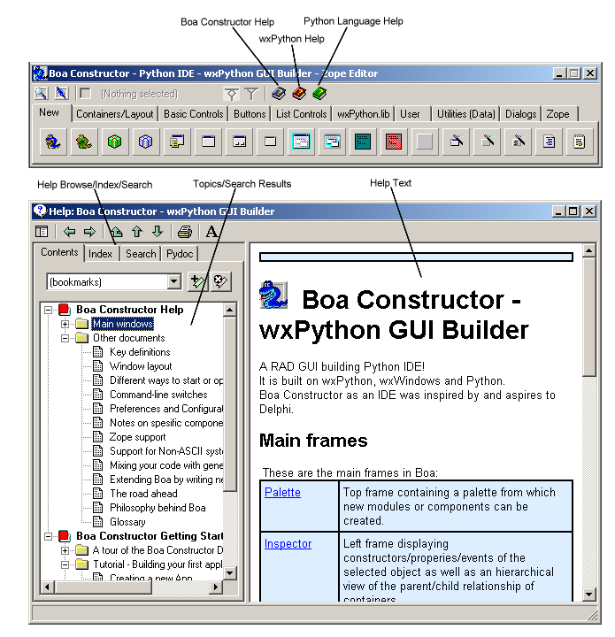
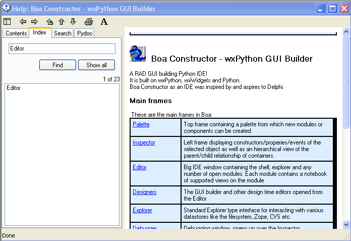

1.8 Using Help
The Boa Constructor environment provides links to different help files
from your environment.
As of Boa 0.6.0 the following help files are included:
- Boa Constructor Help
- Boa Constructor getting Started Guide
- Python 2.5 Documentation
- wxWidgets 2.8.4
- wxPython
2.8.4 API Documenation
- wxStyledTextCtrl Documenation
- Object Graphics Library 3.0
Additional help books can be added (see help books).

The easiest and fastes access to help is just about anywhere in Boa
via CTRL-H, then key in what you are looking for and Boa will find all
references in ALL the helpbooks it knows about (e.g. wxPython, Python
etc) and shows it in a display similar to below.

The help window provides standard HTML based navigation and a search
facility.
If the help does not display correctly, you may need to configure
your
environment.
- The Python or wxPython help may fail to display if the path to
the
installed
Python directory is incorrect. The path to the Python help is in the
platform
preferences file. This is PrefMSW.py for Windows and PrefGTK.py for
UNIX.
- The wxPython help may fail to display if it is not in HTML form.
Your
wxPython
distribution may store their help in Compiled HTML (chm) rather than
standard
HTML (html/htm). The Boa Contructor tool cannot display compiled HTML.
Instead, you should download the HTML version of the documentation from
the wxPython site.
Other good places to look for help
are:
- The demo files provided with wxPython (depending on the installer
you used you
might have to download them separately from the wxPython site).
- Hint: Checkout the Boa plug-in for it, just activate it from
Preferences/Plug-ins/Plug-in files/wxPythonDemo and restart Boa
- The wiki pages on wxPython at: http://wiki.wxpython.org/
- There is are a very helpful community out there which will most
likely be able to help you.